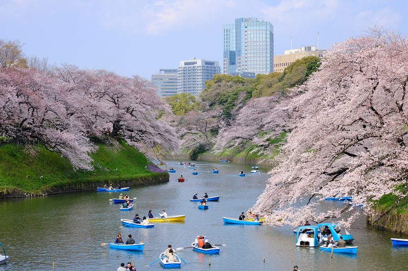

新宿->千鳥ケ淵
新宿三丁目
都營新宿線
九段下

千鳥之淵划船時間：賞櫻特別時間 09:00~20:30（乘船票券賣到20:00，一律採取現場排隊）
前一天先備好糧食
千鳥淵船塢
千鳥ケ淵->武藏小杉(等々力陸上競技場)
半藏門
地鐵半藏門線
渋谷
渋谷
東急東橫線
武藏小杉
J1聯賽 川崎前鋒 vs FC東京
15:00
球賽座位
バックＳ指定大人 Ｊ階段 １８列 498番 497番
川崎前鋒官方網站
川崎前鋒官方商店Azzurro Nero
等々力陸上競技場
武藏小杉->中目黑夜櫻
武藏小杉
東急東橫線
中目黑
目黑川賞櫻
I’m donut ?
AFURI 中目黒
釜元はん米衛中目黒店
中目黑->新宿
中目黑
東急東橫線
/
地鐵副都心線
新宿三丁目
宵夜選擇
しゃぶしゃぶ ステーキ にいむら本店(壽喜燒)
金目鯛らぁ麺 鳳仙花
東京寿司 ITAMAE SUSHI 新宿東宝ビル店
回首頁